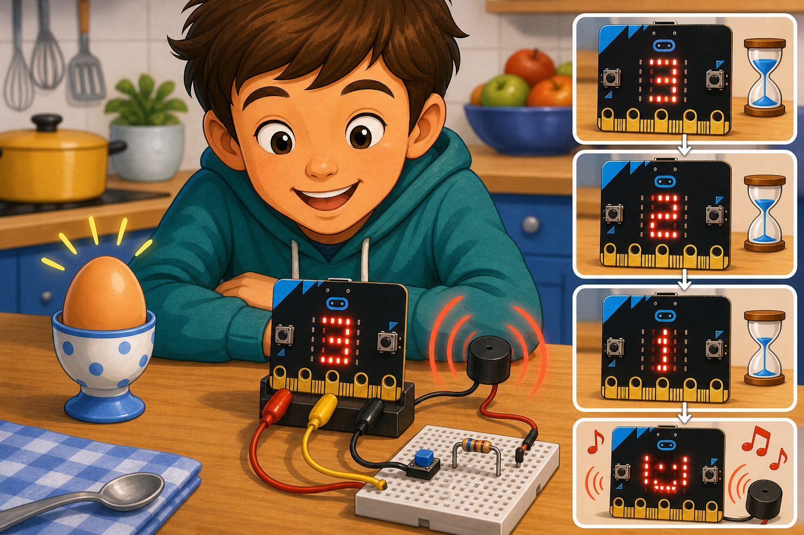
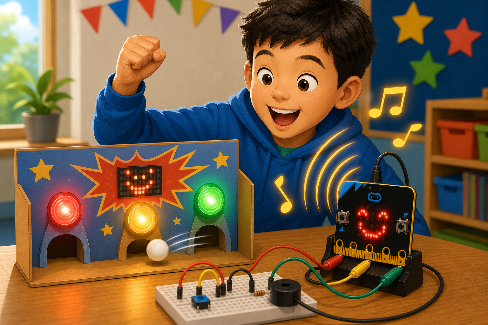

Egg timer
DetectA countdown reaches zero
→
DecideThe time is up
→
DoPlay an alarm tune
The micro:bit V2 has a tiny speaker built in, so it can make sounds and play tunes with no extra parts.
Your code can play built-in melodies, single notes, or fun sound effects.
Your projects can use sound for alarms, music, games, or feedback.


import music
from microbit import *
music.play(music.POWER_UP)
sleep(500)
music.pitch(440, 500)music.playTone(262, music.beat(BeatFraction.Whole))
music.startMelody(music.builtInMelody(Melodies.PowerUp), MelodyOptions.Once)pin0 and GND.